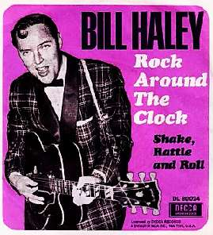

Борис Акунин
Мой календарь
Мужайтесь. Сегодня Всемирный День рок-н-ролла.
Врубайте прямо с утра “Rock Around The Clock” и следуйте указанию: круглые сутки приплясывайте.
Эту каноническую и даже иконическую песню Билл Хэйли и группа «Кометы» записали 13 апреля 1954 года. В честь исторического события праздник и назначен.
Для всего мира это был просто заводной танец, но для советских жителей он превратился в нечто гораздо большее. Ну, потому что у нас всё всегда вечно больше, чем нужно. И поэт больше, чем поэт, и танцульки больше, чем танцульки.
Рок-н-ролл танцевали даже мы, первоклашки - под эту музыку было здóрово беситься в классе на переменке. Слова, правда, распевали другие: «Зиганшин буги, Крючковский рок, Поплавский съел его сапог». Тогда, в начале шестидесятых, у всех навязла в зубах история про трех героических советских моряков, которые семь недель болтались в море на оторвавшейся барже. Даже кино такое было, со сценой съедения сапога.
В класс заглядывала учительница, мы получали и за бесовские пляски, и за непатриотическую песню.
Но не будем тратить время на исторические воспоминания. Поехали!